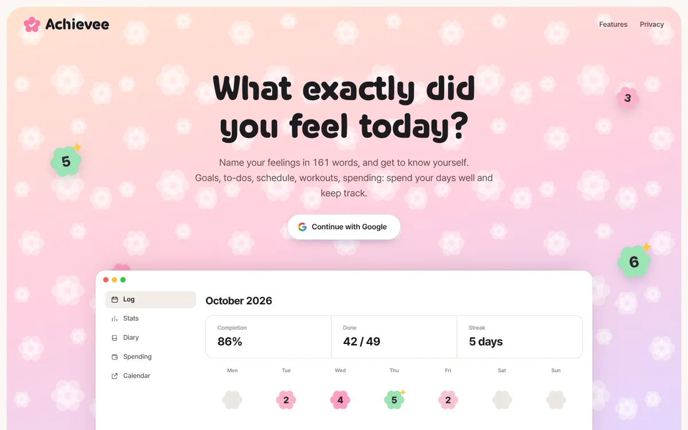
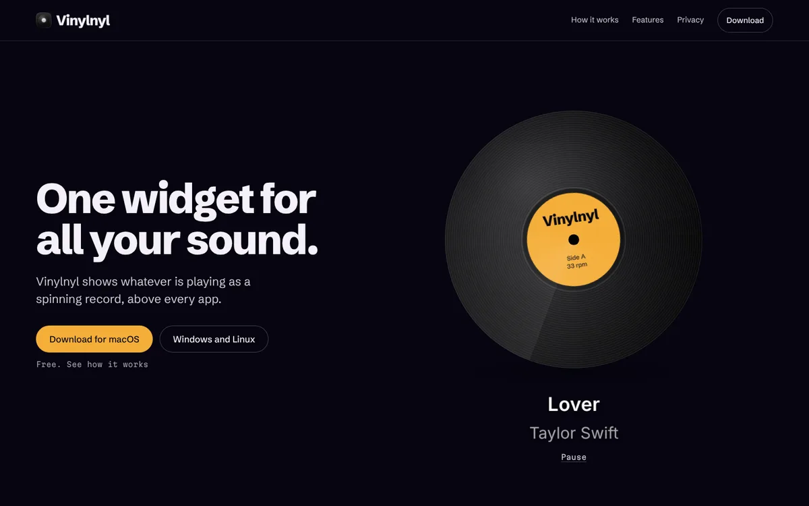
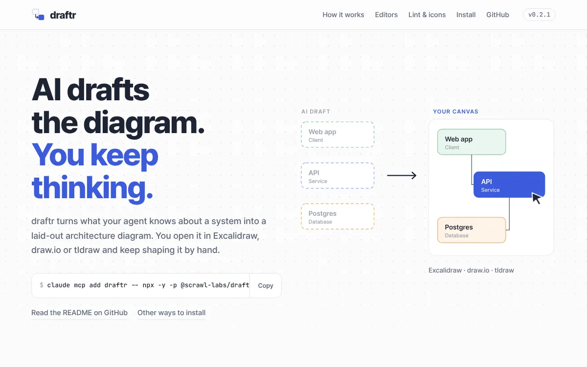
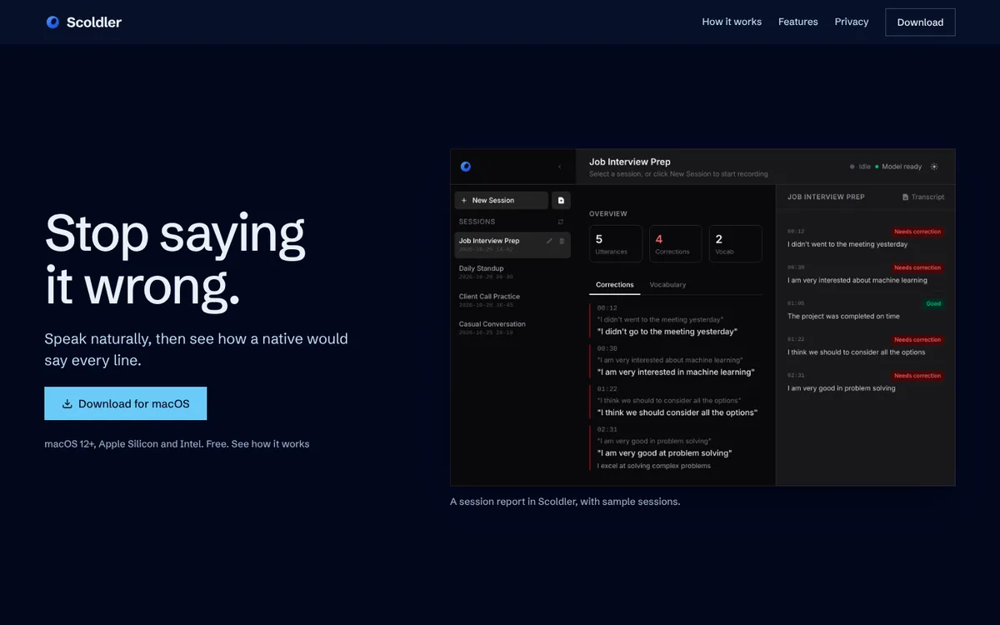
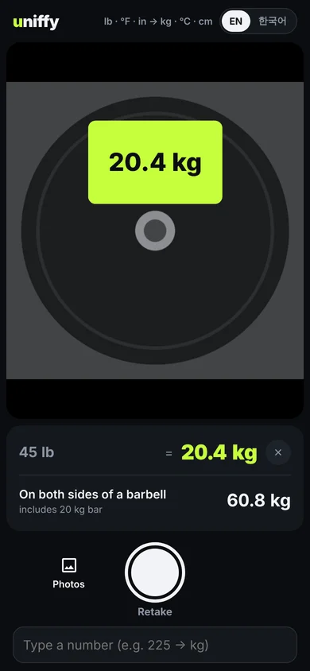
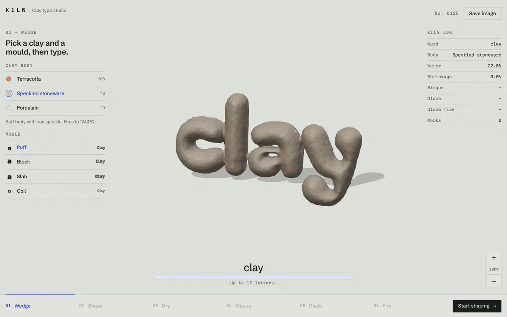
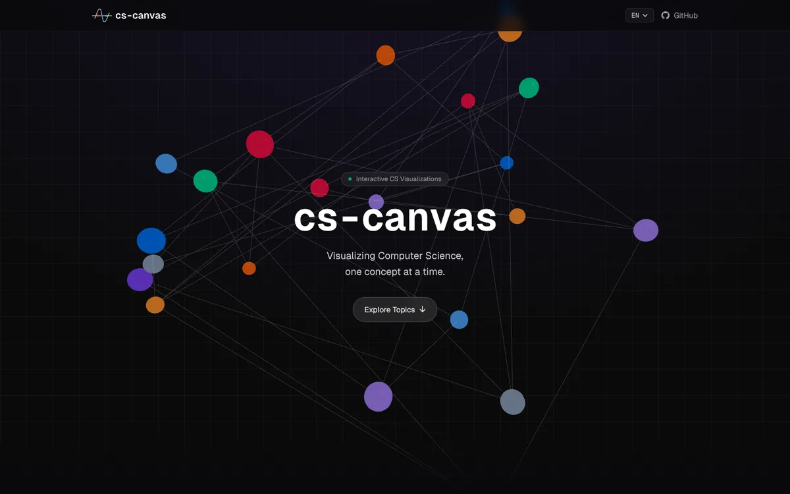

Web
Achievee
A daily tracker with goals, to-dos, calendar, workouts, spending and a diary on one screen. When you write in the diary, you pick what you felt from 161 emotion words. Works in English, Korean, Japanese, Spanish and Traditional Chinese.

Desktop widget
Vinylnyl
Whatever is playing shows up as a spinning vinyl record, floating above every app. Works with YouTube, YouTube Music, Spotify and more, on macOS, Windows and Linux. Free, fully local, no account.

CLI · MCP server
draftr
Your AI agent describes the system, draftr lays out the diagram and lints it. You get a file you open in Excalidraw, draw.io or tldraw and keep shaping by hand, plus an SVG and a PNG for your docs.

macOS app
Scoldler
It listens while you speak English, then shows you, line by line, how a native speaker would have said it. Transcription and feedback both run on your Mac. No cloud, no account.

Phone · web app
uniffy
Take a photo and units like lb, °F, inch, cup and mph turn into kg, °C, cm, ml and km/h right where they're printed. Text recognition runs on your phone, so photos never leave it. Once the model is cached it works offline, even in a basement gym with no signal.

Web · 3D
KILN
Type a word and it gets built out of clay. Squish it into shape with your hands, let it dry, fire it, glaze it and fire it again. Every clay body fires at its own temperature.

Web · learning
cs-canvas
Run an algorithm, step through it, and see why each step happens. Algorithms, data structures, operating systems, networks, databases and computer architecture. The pictures you'd normally draw in your head, on screen.
